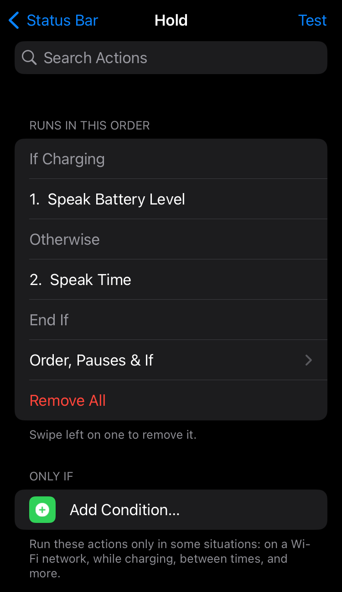
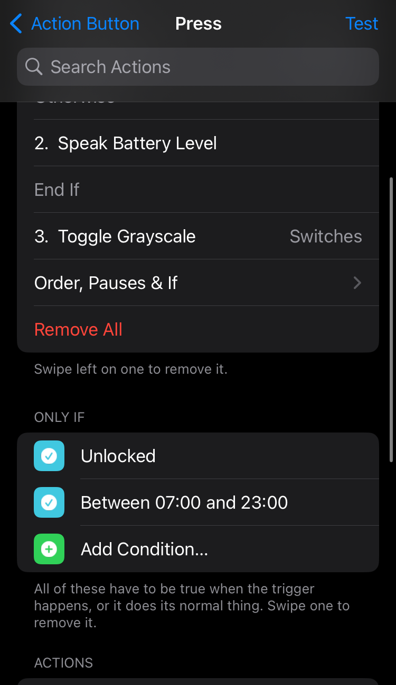
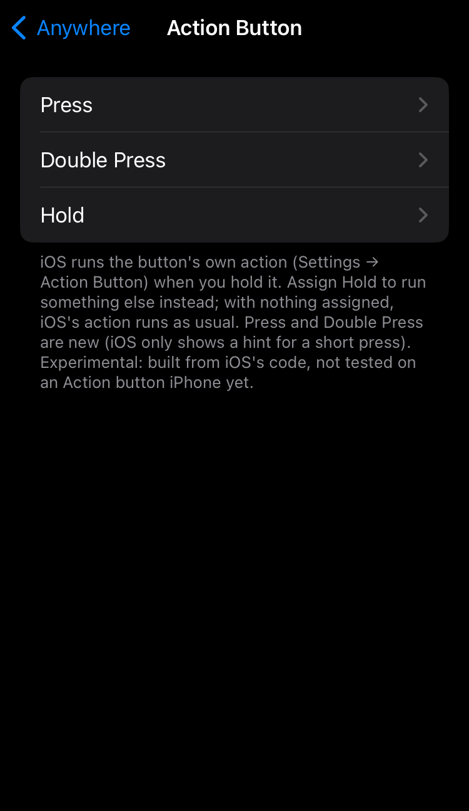
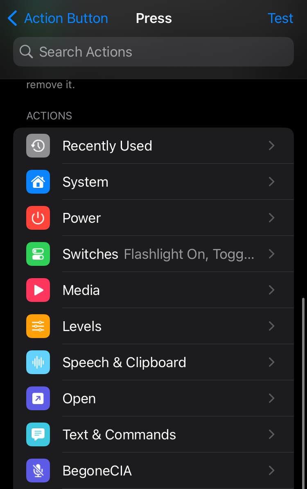

Triggr
Make any button, gesture or event do anything you want.
Like Activator, rebuilt for today's iOS. Nothing changes until you assign something.
Then search Triggr and install. RootHide build: triggr-beta.
How it works
Three taps in Settings → Triggr, or the Triggr app.
A button press, a swipe, a gesture, or something that happens, like your AirPods connecting.

Open an app, flip a switch, run a Shortcut, or a whole list of steps. Test runs it right away.

Everywhere, the Home Screen, in apps, the Lock Screen, or just inside one app.

Ideas to start with
All of these take about ten seconds to set up.
Everything it can do
Every trigger and action Triggr has. Items marked new came in 2.0.
When…
Buttons
Single, double, triple presses, holds and combos.
- Home
- Lock / Side
- Volume up / down
- Volume sequences
- Both volume buttons
- Lock + Volume
- Mute switch
- Touch ID
- Action button (experimental)
Swipes & gestures
Over apps too, without breaking normal scrolling.
- Left / right screen edge
- Two-finger edge swipes
- Swipe up: left, middle, right
- Status bar tap, double tap, hold
- Status bar left / right half
- Status bar swipes
- Two- and three-finger taps in any app
- Multi-finger swipes and pinches in any app
Home Screen
Ignored while editing or with a folder open.
- Flick an icon up, down, left, right
- Flicks for one app
- Pinch in / spread
- Two-finger swipes
- Double tap empty space
Sensors
A sensor only runs while something uses it.
- Shake
- Cover the proximity sensor
- Wave over it
Things that happen
Triggr reacts on its own, no touch needed.
- Charger in / out
- Headphones in / out
- A Bluetooth device
- A Wi-Fi network
- Wi-Fi, Bluetooth, Low Power on / off
- Lock / unlock
- Screen on / off
- Battery above / below %
- An app opened
- A notification (or one app's)
- Calls: incoming, answered, outgoing, ended
- Music started, paused, song changed
- A time, on the days you pick
…do this
Phone
- Home
- App Switcher
- Last app
- Quit app
- Control Center
- Notification Center
- Spotlight
- Siri
- Reachability
- Screenshot
- Screen recording
- Close background apps
- Vibrate
- Do nothing (block the button)
Power
- Sleep
- Lock
- Respring
- Power-off slider
- Safe Mode
- Restart
- Power off
Switches
Toggle, on or off.
- Flashlight
- Wi-Fi
- Bluetooth
- Airplane Mode
- Cellular Data
- Do Not Disturb
- Low Power
- Rotation Lock
- Mute
- Dark Mode
- Night Shift
- Auto-Brightness
- Keep Screen Awake
- Location Services
- Grayscale
- Smart Invert
- Zoom
- Classic Invert
Music & sound
- Play / pause
- Next / previous
- Volume up / down
- Set volume %
- Ringer volume %
- AirPlay picker
- AirPlay to a speaker or TV
- Play on iPhone
Open
- Any app
- A Settings page
- A Shortcut
- A link
Screen
- Brightness %
- Brightness steps
Say & show
- Show a message
- Speak text
- Speak the time
- Speak the battery
- Speak the clipboard
- Run a command
Other tweaks
Show up only while those tweaks are installed.
- EQE presets (EQELinker)
- Begonecia on / off
- Snapper 3
- CopyLog
- any tweak using libtriggr
…and make it smart
Several steps
One trigger runs a list of actions in order, with pauses between them.
- Sequences
- Pauses
- If / Otherwise steps
- Pop-up menus
Only If
Run it only when the conditions match.
- On a Wi-Fi network
- A Bluetooth device connected
- Charging
- Locked / unlocked
- Music playing
- Headphones in
- Low Power on
- Battery above / below %
- Between two times
- Still true after a wait
- or the opposite of any
Where
The same trigger can do different things in different places.
- Anywhere
- Home Screen
- In apps
- Lock Screen
- Inside one app
- Block list (never in these apps)
Your setup
- Profiles
- Export / import
- Search any trigger
- Recently used actions
- Test button
- Action banners
Screenshots







Light by design
Zero cost until you use it
Every sensor, timer and gesture only exists while something is assigned to it. Nothing polls in the background.
Your buttons stay yours
Unassigned buttons work exactly like before. Waking the phone always works, and Emergency SOS is never touched.
Private
Nothing listens on the network. Notification triggers only see which app posted, never what it says.
Tested on
Every arm64 and arm64e iPhone on iOS 15–18 with Dopamine. Checked by hand on:
| Chip | Buttons | iOS |
|---|---|---|
| A10 | Home / Touch ID | 15.8.6 |
| A11 | Home / Touch ID | 16.7 |
| A13 | Face ID | 16.2 |
| A13 | Home / Touch ID | 17.5.1 |
| A13 | Face ID | 18.6.2 |
Questions
Will it change how my buttons work?
Only the ones you assign. An assigned press runs your action instead of the normal one, like Activator. Want both? Add the normal action (Go Home, Volume Up…) to the list, or turn off Options → Replace Button Actions so iOS keeps every press too.
Does it drain battery?
No. Triggr does nothing for triggers you haven't assigned, and the proximity sensor only runs while it's assigned and the screen is on.
Can I still call Emergency SOS?
Yes. Four or more lock button presses are never touched, and holding lock + volume still shows the power-off slider and SOS.
Something went wrong and I'm in safe mode.
Uninstall Triggr in your package manager, respring, and open an issue with your iPhone model, iOS version and Triggr version.
Is it open source?
Triggr 1.x is open source (GPL-3.0) on GitHub. 2.0 and later are closed source. libtriggr, the part other tweaks use, is open source (MIT).
Does it work with RootHide?
There's a RootHide build of every release on triggr-beta. It isn't tested yet, so feedback is welcome.
For developers
libtriggr
Add your tweak's own triggers and actions, plus a "Configure via Triggr" button. MIT. Docs
Action extensions
Add a category of actions with a single plist, like EQELinker does. EXTENSIONS.md
API & command line
Off by default. Run your actions, triggers and menus from tweaks, scripts or Shortcuts (over SSH): triggr run toggle.flashlight.